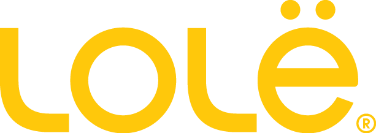
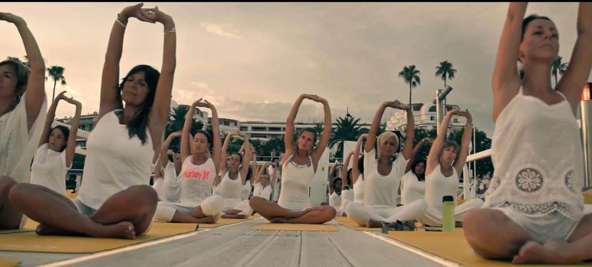

Objectif
Retour aux références
Lolë · 2022
Lolë - Sunset Yoga Experience
Expérience bien-être, événement premium, communauté
Projet réalisé dans le cadre du parcours professionnel antérieur de Lucie Ramon.


LolëExpérience bien-être, événement premium, communautéPilotage d'expériencesPreuve image
LolëExpérience bien-être, événement premium, communautéPilotage d'expériencesPreuve image
Étude de cas
Contexte
Une activation lifestyle pensée comme un moment signature : yoga sunset, dotations, accueil, ambiance et contenus social media.
Rôle de Lucie
- Conception et production complète de l'événement.
- Direction artistique, scénographie, billetterie et inscriptions.
- Coordination logistique et communication dédiée.
- Organisation du parcours expérience : cours, dotations, sunset apéro, captation photo et vidéo.
Chiffres & faits marquants
60 participantes sur le ponton du Majestic - sold out
60 tapis et 60 tote bags distribués
1h de yoga sunset avec instructrice certifiée
Visibilité premium sur un lieu iconique de Cannes
Expérience signature Lolë
Pour votre marque
Produire une expérience lifestyle avec lieu, talents, invités et contenus.
Studio Madame-L coordonne le concept, la recherche des intervenants, la production et la visibilité pour créer un rendez-vous de marque fluide et engageant.
Référence suivante